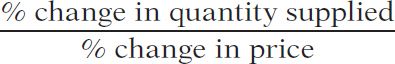

5.4 The Price Elasticity of Supply
A fundamental characteristic of any market for ambulance services, no matter where it is located, is limited supply. For example, it would have been much harder to charge Kira Mills $1,772.42 for a 15-minute ride to the hospital if there had been many ambulance providers cruising nearby and offering a lower price. But there are good economic reasons why there are not: who among those experiencing a true health emergency would trust their health and safety to a “low-price” ambulance? And who would want to be a supplier, paying the expense of providing quality ambulance services, without being able to charge high prices to recoup costs? Not surprisingly, then, in most locations there is only one ambulance provider available, as we have seen.
In sum, a critical element in the ability of ambulance providers to charge high prices is limited supply: a low responsiveness in the quantity of output supplied to the higher prices charged for an ambulance ride. To measure the response of ambulance providers to price changes, we need a measure parallel to the price elasticity of demand—the price elasticity of supply, as we’ll see next.
Measuring the Price Elasticity of Supply
The price elasticity of supply is a measure of the responsiveness of the quantity of a good supplied to the price of that good. It is the ratio of the percent change in the quantity supplied to the percent change in the price as we move along the supply curve.
The price elasticity of supply is defined the same way as the price elasticity of demand (although there is no minus sign to be eliminated here):
(5-9) Price elasticity of supply = 
The only difference is that now we consider movements along the supply curve rather than movements along the demand curve.
Suppose that the price of tomatoes rises by 10%. If the quantity of tomatoes supplied also increases by 10% in response, the price elasticity of supply of tomatoes is 1 (10%/10%) and supply is unit-elastic. If the quantity supplied increases by 5%, the price elasticity of supply is 0.5 and supply is inelastic; if the quantity increases by 20%, the price elasticity of supply is 2 and supply is elastic.
As in the case of demand, the extreme values of the price elasticity of supply have a simple graphical representation. Panel (a) of Figure 5-6 shows the supply of cell phone frequencies, the portion of the radio spectrum that is suitable for sending and receiving cell phone signals. Governments own the right to sell the use of this part of the radio spectrum to cell phone operators inside their borders. But governments can’t increase or decrease the number of cell phone frequencies that they have to offer—for technical reasons, the quantity of frequencies suitable for cell phone operation is a fixed quantity.
There is perfectly inelastic supply when the price elasticity of supply is zero, so that changes in the price of the good have no effect on the quantity supplied. A perfectly inelastic supply curve is a vertical line.
154
So the supply curve for cell phone frequencies is a vertical line, which we have assumed is set at the quantity of 100 frequencies. As you move up and down that curve, the change in the quantity supplied by the government is zero, whatever the change in price. So panel (a) illustrates a case in which the price elasticity of supply is zero. This is a case of perfectly inelastic supply.
Panel (b) shows the supply curve for pizza. We suppose that it costs $12 to produce a pizza, including all opportunity costs. At any price below $12, it would be unprofitable to produce pizza and all the pizza parlors in America would go out of business. Alternatively, there are many producers who could operate pizza parlors if they were profitable. The ingredients—flour, tomatoes, cheese—are plentiful. And if necessary, more tomatoes could be grown, more milk could be produced to make mozzarella, and so on. So any price above $12 would elicit an extremely large quantity of pizzas supplied. The implied supply curve is therefore a horizontal line at $12.
There is perfectly elastic supply when even a tiny increase or reduction in the price will lead to very large changes in the quantity supplied, so that the price elasticity of supply is infinite. A perfectly elastic supply curve is a horizontal line.
Since even a tiny increase in the price would lead to a huge increase in the quantity supplied, the price elasticity of supply would be more or less infinite. This is a case of perfectly elastic supply.
As our cell phone frequencies and pizza examples suggest, real-world instances of both perfectly inelastic and perfectly elastic supply are easy to find—much easier than their counterparts in demand.
What Factors Determine the Price Elasticity of Supply?
Our examples tell us the main determinant of the price elasticity of supply: the availability of inputs. In addition, as with the price elasticity of demand, time may also play a role in the price elasticity of supply. Here we briefly summarize the two factors.
The Availability of Inputs The price elasticity of supply tends to be large when inputs are readily available and can be shifted into and out of production at a relatively low cost. It tends to be small when inputs are difficult to obtain—and can be shifted into and out of production only at a relatively high cost. In the case of ambulance services, the high cost of providing quality ambulance services is the crucial element in keeping the elasticity of supply very low.
155
Time The price elasticity of supply tends to grow larger as producers have more time to respond to a price change. This means that the long-run price elasticity of supply is often higher than the short-run elasticity.
The price elasticity of the supply of pizza is very high because the inputs needed to expand the industry are readily available. The price elasticity of cell phone frequencies is zero because an essential input—the radio spectrum—cannot be increased at all.
Many industries are like pizza production and have large price elasticities of supply: they can be readily expanded because they don’t require any special or unique resources. In contrast, the price elasticity of supply is usually substantially less than perfectly elastic for goods that involve limited natural resources: minerals like gold or copper, agricultural products like coffee that flourish only on certain types of land, and renewable resources like ocean fish that can only be exploited up to a point without destroying the resource.
But given enough time, producers are often able to significantly change the amount they produce in response to a price change, even when production involves a limited natural resource or a very costly input. Agricultural markets provide a good example. When American farmers receive much higher prices for a given commodity, like wheat (because of a drought in a big wheat-producing country like Australia), in the next planting season they are likely to switch their acreage planted from other crops to wheat.
For this reason, economists often make a distinction between the short-run elasticity of supply, usually referring to a few weeks or months, and the long-run elasticity of supply, usually referring to several years. In most industries, the long-run elasticity of supply is larger than the short-run elasticity.
ECONOMICS in Action
European Farm Surpluses
 | interactive activity
| interactive activity
One of the policies we analyzed in Chapter 4 was the imposition of a price floor, a lower limit below which price of a good could not fall. We saw that price floors are often used by governments to support the incomes of farmers but create large unwanted surpluses of farm products. The most dramatic example of this is found in the European Union, where price floors have created a “butter mountain,” a “wine lake,” and so on.
Were European politicians unaware that their price floors would create huge surpluses? They probably knew that surpluses would arise but underestimated the price elasticity of agricultural supply. In fact, when the agricultural price supports were put in place, many analysts thought they were unlikely to lead to big increases in production. After all, European countries are densely populated and there is little new land available for cultivation.
What the analysts failed to realize, however, was how much farm production could expand by adding other resources, especially fertilizer and pesticides, which were readily available. So although European farm acreage didn’t increase much in response to the imposition of price floors, European farm production did!
Quick Review
The price elasticity of supply is the percent change in the quantity supplied divided by the percent change in the price.
Under perfectly inelastic supply, the quantity supplied is completely unresponsive to price and the supply curve is a vertical line. Under perfectly elastic supply, the supply curve is horizontal at some specific price. If the price falls below that level, the quantity supplied is zero. If the price rises above that level, the quantity supplied is extremely large.
The price elasticity of supply depends on the availability of inputs, the ease of shifting inputs into and out of alternative uses, and the period of time that has elapsed since the price change.
Check Your Understanding 5-4
Question 5.9
1. Using the midpoint method, calculate the price elasticity of supply for web-design services when the price per hour rises from $100 to $150 and the number of hours transacted increases from 300,000 to 500,000. Is supply elastic, inelastic, or unit-elastic?
Question 5.10
2. True or false? If the demand for milk rose, then, in the long run, milk-drinkers would be better off if supply were elastic rather than inelastic.
156
Question 5.11
3. True or false? Long-run price elasticities of supply are generally larger than short-run price elasticities of supply. As a result, the short-run supply curves are generally flatter than the long-run supply curves.
Question 5.12
4. True or false? When supply is perfectly elastic, changes in demand have no effect on price.
Solutions appear at back of book.